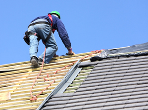

Are You Looking For an Greeley Roofing Contractor?
If you are looking for a reliable roofing contractor serving Greeley, look no further! Kessler Roofing, Inc. is a locally owned and operated full-service Greeley roofing contractor that provides both residential and commercial roofing services throughout Greeley, CO and the surrounding areas. From roof repairs to complete tear offs and roof replacement to new roof construction, Kessler Roofing, Inc. is the Greeley roofing contractor you can rely on to get your roofing project completed on time, on budget, and with the highest quality results. We have years of experience taking care of the both residential and commercial roofing of clients in Greeley, and our large base of satisfied customers continues to grown thanks to the hard work and dedication of our expert Greeley roofing contractors.
Don't trust your roof to just any Greeley roofer. Contact the Greeley roofing contractor you KNOW can provide you with top quality results and exceptional customer service - call Kessler Roofing, Inc. today!
Kessler Roofing, Inc. - Greeley Roof Repairs
Greeley roof repairs are needed for a variety of reasons. Damages to your roof can come from many causes, including severe weather and poor maintenance. Some of the causes of roof damages in Greeley are connected to the type of roof you have, though. Whether you are trying to protect and extend the life of an existing roof or you want to protect a new roof, be sure to hire a competent professional when you need Greeley roof repairs, and don't put this type of home improvement task off! The later you wait to get around to hiring a company to take care of your Greeley roof repairs, the more extensive the damage will be, which means more money out of your pocket.
Greeley Roofer
When it comes to Greeley roofers, Kessler Roofing, Inc. has some of the best! Our qualified and professional Greeley roofers are always ready to provide our customers with top quality services, efficient project completion, and the highest level of craftsmanship.
You don't have to take our word for it, though. Hire Kessler Roofing, Inc. today to serve as your Greeley roofer, and see for yourself why so many other homeowners and businesses in Greeley choose us as their Greeley roofer.
- Greeley roofing contractor
- Greeley commercial roofing
- Greeley roofing contractor
- Greeley roof replacement
- Greeley roofer
- Greeley roof repairs
- Greeley roofs
- Greeley roofing
- Greeley roofing services
- Greeley metal roofing
- Greeley tile roofing
- Greeley roofing shingles
Greeley Roof Replacement
Do you need a new roof? If your living room or kitchen sports large stains from roof leaks, the answer is probably “yes.” That means you will be looking for a reputable Greeley roofing contractor to handle the job for you.
Greeley roof replacement is an important job, so don’t let just anyone tamper with your roof. It is an important part of your home’s structure, and only an expert Greeley roofing contractor should tackle needed repairs and updates such as a roof replacement.
5 Quick Tips On Hiring A Reliable Greeley Roofing Contractor
Your roof is one of the most important yet neglected parts of your Greeley home. You don't usually think about your roof until it starts to leak or gets damaged. If it is time to have your roof replaced read these 5 quick tips to help you with your Greeley roof replacement project.
1. Get a written contract. Get everything in writing before your Greeley roofer begins work so that there are no surprises. The bid should be detailed giving you prices for labor, materials, etc.
2. Check your Greeley roofer out before you begin work. Don't just ask for references, pick up the phone and call them. Also make sure that they are licensed and insured.
3. Never pay for the job all up front. Most roofing companies will want some sort of down payment but you should never pay for the entire job before it has been completed.
4. Get multiple bids. Don't just get one or two bids. Greeley roof replacement is a big job and you need many bids to compare. Beware of the lowest bidder and remember that you do not want to be ripped off and you also get what you pay for.
5. Be wary of con artists. Watch out for low bidders wanting large deposits or contractors who knock on your door soliciting. If a deal sounds too good to be true it probably is.
Roof replacement is serious work. Take your time, do your homework and you will get through this home repair project easily with a reliable Greeley roofing contractor.